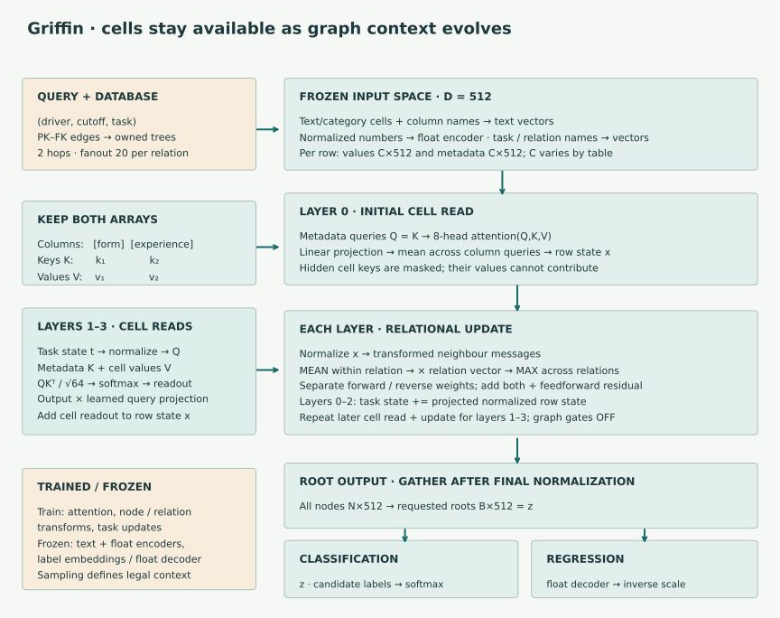
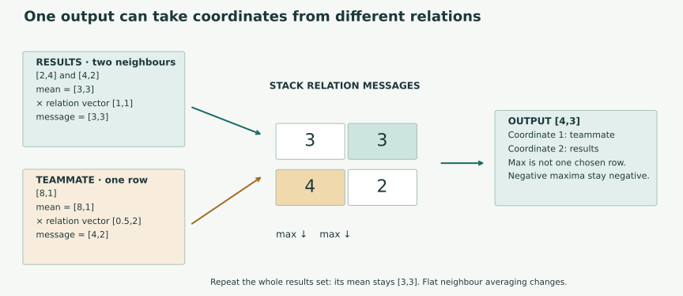
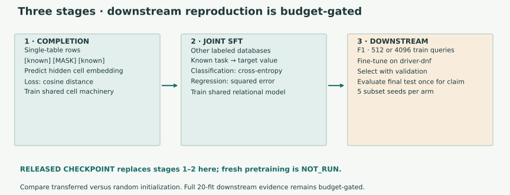

Year5 · Quarter1 · Lesson164
Griffin — a graph-centric relational foundation model
Quick reference · Full reproduction contract · Evidence and budget decision
1 · One row need not have one permanent summary¶
Your tangible win: trace a Griffin prediction from individual cells through relational messages, then distinguish an architecture check from evidence that pretraining transfers.
Reading route. First trace one row through the architecture and the two-number attention example. Then trace the relation maximum. Read the training stages and reproduction protocol after you can explain those two operations; reserve the notebook for a separate practice session.
Lesson 163 made one vector from a row before fitting a prediction head. That leaves a bottleneck: a fixed summary must preserve everything a later task might need. Predicting a driver's finishing status and predicting qualifying performance need not ask the same question of a row. Griffin keeps the cell vectors available and lets the graph model read them again as its task and relational context evolve.
Recall the GNN–tabular stack: an encoder represents each row, message passing adds related rows, and a head predicts a task. Griffin shares these operations across schemas and tasks. A shared interface makes transfer possible; only held-out experiments establish useful transfer. The foundation-model definition from Lesson 161 still requires broad pretraining followed by adaptation.
A cell is a value in a named column. A node is a database row. A relation is a particular foreign-key connection, such as results→drivers. Metadata describes names and roles, not the outcome to be predicted. A task embedding is a vector representing what we want to predict. The prediction target must be removed when it is also an input feature.
Primary reading: Wang et al., Griffin, §§3–4 and Table 12. Read the architecture first, then the selected experiment. The official implementation is a second source: the compact paper equations omit some operations that affect checkpoint execution.
2 · Model architecture: retain cells, update context¶
In plain terms. Instead of packing a row once and hoping the right details survive, Griffin repeatedly asks its cells what matters for the current task and neighborhood. Cell attention chooses information within a row; relational messages bring information from other rows.
Shape and graph reminders. C×D means C cell vectors, each with D coordinates. A primary key (PK) identifies a row; a foreign key (FK) supplies a link to another row. Two hops follow at most two links. The root is the row being scored, and its cutoff is the time beyond which information is unavailable to that prediction.

Inputs. Each sampled row supplies a C×D matrix of cell vectors and a C×D matrix of column-name vectors. C varies by table; the release uses D=512. Category/text values and names use pretrained text embeddings. Numerical values are normalized and passed through a pretrained float encoder. These input encoders stay frozen during downstream adaptation. Our replay consumes the released processed representations; it does not re-create or prove the original normalizer's fitting scope. Paper §3.1
Sampling. A query is identified by both its entity and cutoff time. The main graph sampler builds a two-hop computation tree, with fanout 20 per relation. Fanout is a sampling limit, not a guarantee of 20 neighbours. Repeated appearances of a database row can remain separate computation nodes belonging to different queries. The owner's cutoff travels through every hop; one batch-wide maximum would expose later information to earlier queries.
Four update layers. The released model first uses column metadata as both attention queries and keys, cell vectors as values, then averages the resulting queries. Later layers form a query from the evolving task representation. They add the cell readout to the current node state, then add a pointwise feedforward update, forward relational messages and reverse relational messages. “Residual” means adding an update to the existing vector rather than replacing it. Layer normalization rescales each vector's coordinates before these updates. The task state itself receives a learned projection of the updated row state between layers. Pinned forward pass
A feedforward update applies a small neural network to each node vector separately. A projection is a learned linear mapping between vector spaces. Forward and reverse messages traverse a relation in its two directions, with separate learned weights. The diagram's layer numbers 0–3 count four layers in total.
Output. A final layer normalization gives one D-dimensional vector per computation node. Gather the requested roots. For classification, take its dot product with each frozen candidate-label vector and apply softmax. For regression, pass it through the frozen float decoder and the appropriate inverse numerical transform. Our selected experiment is binary classification; it does not exercise regression's inverse transform. A unified decoder can accept different label vocabularies without a fresh output matrix per task, but the model still undergoes downstream fine-tuning.
Shared does not mean weight-free. Griffin-unpretrained fits this architecture separately on the downstream task. Griffin-pretrained starts from single-table pretraining. Griffin-RDB-SFT also receives joint supervised fine-tuning on other relational tasks. SFT means supervised fine-tuning: updating weights using labeled examples. Our transfer arm starts from the released Others-2 checkpoint and fine-tunes on F1. It is not a zero-shot or purely in-context prediction.
3 · Cross-attention asks which cells matter now¶
An attention query Q represents the information being requested. Keys K describe candidate information, and values V contain what is read. Griffin uses column metadata as keys and cell embeddings as values. The two must remain paired.
For one attention head with width d:
score_j = dot(Q, K_j) / sqrt(d)
weight_j = exp(score_j) / sum(exp(score_visible))
readout = sum(weight_j × V_j)
Softmax converts scores into nonnegative weights summing to 1. Division by √d keeps dot-product scale from growing automatically with head width. A mask removes unavailable cells before normalization. Eight heads in the release learn different projections into 64-dimensional subspaces; their readouts are concatenated and projected back to 512 dimensions. The released later-layer cell module also multiplies the attention output by a learned linear projection of its query. This elementwise modulation is separate from the optional graph-message gates, which the transfer script disables.
Worked two-dimensional head. Let keys for recent form and experience be [1,0] and [0,1]. Let their values be [2,0] and [0,4]. A query [√2,0] gives scores [1,0], weights [0.731,0.269], and readout [1.462,1.076]. A query [0,√2] instead gives [0.538,2.924]. These are invented projected vectors for arithmetic, not real racing features or trained predictions.
Reverse complete key/value pairs: the sum stays the same. Reverse only values: the meanings become mismatched. The architecture is invariant to a joint permutation of cells and their metadata when masks move with them and dropout is disabled. That does not mean renaming metadata has no effect, or that training dropout yields identical individual samples.
The notebook's cell_attention TODO supplies this operation to the visible multihead module. You will also replay projected Q/K/V from one actual released checkpoint layer; those cached tensors are distinct from the invented two-dimensional example.
4 · Relation structure should survive aggregation¶
A node can have many results records but few teammates. A single average across all neighbours weights each relation by its number of neighbours. That may wash out a useful sparse relation. Griffin instead computes a mean within each relation, multiplies by a learned relation vector, and takes a coordinate-wise maximum across relations. This is a specific inductive bias, not a universal rule that max is best.
For receiver i, relation r and transformed neighbour vector u:
relation_mean[i,r] = mean(u[j] for neighbours j of i under r)
message[i] = coordinate_max(relation_mean[i,r] * relation_vector[r])
Here * multiplies matching coordinates. “Coordinate-wise” matters: different output coordinates can come from different relations. The release applies a learned linear transform to edge metadata before this multiplication and separately transforms node states before aggregation. Reverse messages have their own weights. Receivers with no incoming neighbours get a zero update; a nonempty set of negative messages must not accidentally be clamped to zero. Paper §3.2, released RMPNN

Our results neighbours [2,4] and [4,2] average to [3,3]. Their relation vector is [1,1], leaving [3,3]. A teammate [8,1] with relation vector [0.5,2] contributes [4,2]. The final maximum is [4,3]: the first coordinate comes from teammate context and the second from results context. Repeating the complete results-neighbour set changes neither its mean nor that final message. Duplicating just one unequal neighbour can change the mean.
The later teammate [20,10] is timestamped 6. It is excluded at cutoff 5, included at cutoff 7. Once eligible, it changes the teammate mean to [14,5.5], the weighted message to [7,11], and the final result to [7,11]. Temporal eligibility is therefore part of the computation, not just bookkeeping around a dataset split.
A source limitation worth keeping visible. The main graph sampler passes strict owner cutoffs through its hops; our audit checked 1,494 sampled edges. A separate few-shot helper samples earlier row indices and ignores its timestamp argument. We demonstrated why that is unsafe for a generic time-stamped table. For the selected F1 task, those helper roots are static driver rows with sentinel timestamps earlier than every query and no task-label feature. The sampled F1 roots pass this narrow audit. It does not establish historical feature availability or make the helper safe on every database. Audit receipt
5 · Where the reusable weights come from¶

Completion pretraining hides a cell and predicts its frozen embedding from the remaining row. The paper uses cosine distance, 1 − dot(a,b)/(norm(a)×norm(b)), which compares direction rather than magnitude. Single-table completion can train the cell-reading machinery without relational edges.
Joint SFT exposes the shared model to labeled tasks: classification uses cross-entropy, which penalizes low probability assigned to the correct class; regression uses squared error. Downstream fine-tuning then updates that pretrained model on a selected new task. The released data/float encoders remain frozen, while shared cell-attention and message-passing parameters train. Paper §4
For transfer, “new task” and “new database” are different claims. Others-2 contains Airbnb, trial, TalkingData and Telstra tasks; F1 belongs to Others-1. The released grouping separates these database families. That is a declared group split, not proof about every historical row in pretraining. The paper reports evaluations spanning more than 150 million nodes; this is not evidence that our lesson freshly pretrained on that population.
6 · Full reproduction: define the claim before the run¶
Named target: Table 12, Others-2 SFT→rel-f1-driver-dnf, compared with no-pretrain, at 512 and 4,096 labeled training queries. Five subset seeds 42–46 per arm/size give 20 fits. The model seed remains 42. Each pair receives the same sampled query subset. This tests the value of the released pretraining initialization on one task; it does not compare Griffin with every other architecture.
| Training queries | No-pretrain published AUROC | Others-2 SFT published AUROC | Fresh lesson result |
|---|---|---|---|
| 512 | 0.6558 | 0.7098 | NOT_RUN |
| 4,096 | 0.7176 | 0.7275 | NOT_RUN |
These are published means, not our measurements. AUROC measures how well scores rank positives above negatives; 0.5 is chance-level ranking and 1 is perfect. The released metric takes multiclass AUROC over the two candidate labels; our independent scorer uses the corresponding softmax probability for label index 1. The processed class-index semantics are retained rather than assumed to equal a current RelBench label convention. Table 12
The source protocol permits 200 epochs, with full validation every 2 epochs and patience 10 under its exact epoch − best_epoch > patience condition. Batch 256, hidden 512, four message-passing layers, hop 2, fanout 20, three few-shot roots, AdamW learning rate 0.0003 and weight decay 0.0002. Validation nominates the checkpoint. The original code also logs test results whenever validation improves; those test results must not drive any decision. Our release replay retains that behavior and saves keyed predictions for independent rescoring. Protocol and commands
A source-matching forward pass establishes implementation compatibility. A timing probe establishes resource observations. Neither establishes the Table 12 transfer gain. The full executable lane remains available with its budget gate; no seed, sample-size or validation-coverage reduction is silently substituted. Exact historical preprocessing and full pretraining remain NOT_ESTABLISHED / NOT_RUN respectively.
7 · Lab: make the mechanism yours¶
The standalone notebook has three live tasks, with immediate checks:
- Implement masked, scaled cell attention. Your function supplies every head in the visible model, then recomputes the cached real checkpoint head.
- Implement mean-within-relation, weighted-max-across-relations. Your function drives the model's forward and reverse message paths.
- Implement strict owner-specific temporal eligibility. Your function controls the worked neighbour intervention and must reject a single batch cutoff.
Then run a small complete four-layer forward/backward pass, inspect the real source evidence, and write a 200–300 word defense. Explain why [4,3] can combine two different relations, which weights train, and what would be needed to claim transfer. A notebook that merely runs is author preparation, not learner mastery. Defense template
Exit check: explain why column permutation, schema renaming, changing the task, and changing the cutoff are four different interventions. Ask your teacher a follow-up question about any step you cannot derive. Revisit this explanation after a few days without opening the answer.
Next: Lesson 165 examines relational in-context adaptation. Keep the distinction sharp: this Griffin experiment updates model weights for the downstream task; an in-context method instead conditions on examples supplied at prediction time under its own protocol.